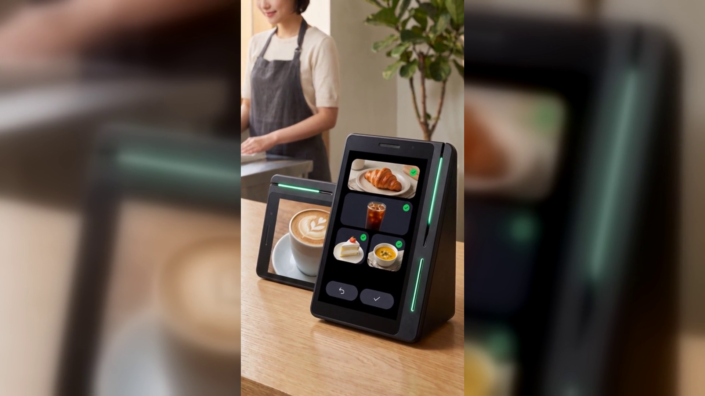

쿠폰이 손님을 다시 부르게 하는 방법
결론부터 말씀드리면, 매장에서 어려운 것은 손님을 처음 오게 하는 일이 아닙니다.
한 번 온 손님을 다시 오게 하는 일입니다.
장사를 오래 하신 사장님일수록 이 이야기를 하십니다.
검색해서 찾아오는 손님은 있습니다. 첫 방문도 꾸준히 있습니다.
그런데 그 손님이 두 번째로 오지 않습니다.
매장은 그대로이고 음식도 그대로인데 손님만 한 번씩 스쳐 갑니다.
쿠폰을 만들어 보신 분도 계실 것입니다.
종이로 뽑아 계산대 옆에 쌓아 두었는데 몇 장 나가지 않고 색만 바랬습니다.
손님은 받아도 지갑에 넣고 잊어버립니다.
쿠폰을 만드는 일보다 쿠폰이 손님 손에 닿는 일이 훨씬 어렵습니다.
쿠폰을 만들어 두는 곳과 손님을 만나는 곳이 서로 떨어져 있습니다.
쿠폰은 사장님 휴대폰 안이나 종이 위에 있고
손님은 계산대 앞에 잠깐 서 있다가 나갑니다.
그 사이를 이어 주는 것이 사장님의 말 한마디뿐입니다.
「저희 쿠폰 받아 가세요」 이 말을 바쁜 시간에 백 번 하기는 어렵습니다.
뒤에 줄이 서 있으면 더 못 합니다.
손님이 매장 안에 있는 그 짧은 시간이 가장 좋은 순간인데
그 순간에 쓸 수 있는 도구가 결제기 하나뿐이었던 것입니다.
결제기는 돈만 받고 손님을 그냥 보냅니다.
네이버단말기(Npay 커넥트)는 스마트플레이스 쿠폰을 연동합니다.
매장의 쿠폰을 계산대에 걸어 두는 것입니다.
한 번 연결해 두면 사장님이 계산할 때마다 따로 챙기지 않아도 됩니다.
손님이 결제를 마치면 손님 쪽 화면에 리뷰 키워드가 뜹니다.
손님이 마음에 드는 키워드를 손가락으로 고르면
그 자리에서 포인트가 적립되고 쿠폰이 붙습니다.
사장님은 아무 말도 하지 않아도 되고 손님도 오래 붙잡히지 않습니다.
그리고 이 쿠폰은 종이가 아니어서 잃어버릴 일이 없습니다.
손님이 늘 쓰는 네이버 안에 그대로 남아 있습니다.
같은 화면에서 쌓인 리뷰는 다음 손님이 검색할 때 보는 자리에 남습니다.
쿠폰은 왔던 손님을 부르고 리뷰는 아직 안 온 손님을 부릅니다.
기기는 커피컵 높이의 작은 탁상 기기입니다.
겉모습은 유광 검정에 옆으로 비스듬한 쐐기 모양이고
옆면에 초록색 불빛이 한 줄 들어옵니다.
화면이 두 개여서 사장님이 보는 큰 세로 화면과 손님이 보는 작은 화면이 나뉩니다.
사장님 화면으로 주문과 결제를 처리하는 동안
손님 화면에서는 리뷰와 쿠폰이 오갑니다.
자리를 놓는 방법도 한 가지가 아닙니다.
가로로도 세로로도 놓을 수 있어서 카운터 사정에 맞추면 됩니다.
카드 리더기와 포스가 이미 자리를 차지한 좁은 계산대라면
이 부분이 생각보다 크게 쓰입니다.
결제 수단은 카드와 QR, 페이스사인, 삼성페이를 받고
해외 손님이 쓰는 위챗페이와 알리페이플러스까지 받습니다.
네이버페이 공식 이용후기에 실린 박00 · 음식점 대표의 말입니다.
"쿠폰을 커넥트에 연동해두니 손님이 알아서 다시 찾아오고, 기기가 가로·세로 다 놓을 수 있어 좁은 카운터에도 딱 맞았어요."
다시 오는 손님이 없는 매장과 다시 오는 손님이 있는 매장의 차이는
사장님의 부지런함이 아니라 계산대에 무엇을 놓았는가입니다.
쿠폰을 따로 만들어 따로 나눠 주려고 하면 결국 못 합니다.
손님이 계산하는 그 자리에 쿠폰을 이어 붙여 두면 저절로 나갑니다.
네이버 공식 안내에도 앞으로 매장 운영에 도움이 될 새로운 기능이
추가될 예정이라고 되어 있습니다(일부 서비스는 오픈 준비 중입니다).
지금 계산대를 한 번 보시고, 그 자리가 손님을 그냥 보내고 있는지 확인해 보십시오.
네이버단말기(Npay 커넥트)는 결제가 끝난 자리에서 네이버 리뷰·쿠폰·적립이 이어지는
스마트 사인패드입니다. 쓰던 포스는 그대로 두고 연결만 합니다.
· 상담 문의 · A/S 접수 — 평일 9시~20시 / 토·일·공휴일 11시~17시
· 정품 신제품 보증 · 수도권 직영 설치
누리네트웍스 · 결제는 더 쉽게, 매장은 더 스마트하게
🔗 https://nwpos.co.kr?utm_source=youtube&utm_medium=social&utm_campaign=daily7&utm_content=connect-coupon
#네이버단말기 #네이버커넥트 #Npay커넥트 #네이버페이단말기 #스마트플레이스 #스마트플레이스쿠폰 #재방문쿠폰 #단골관리 #쿠폰적립 #네이버리뷰 #사인패드 #결제단말기 #카드단말기 #포스기 #포스 #간편결제 #카드결제 #매장운영 #매장관리 #자영업 #소상공인 #자영업노하우 #개인사업자 #가맹점 #창업준비 #누리포스 #누리네트웍스 #Shorts
[SNS아이콘]
[SNS배너]